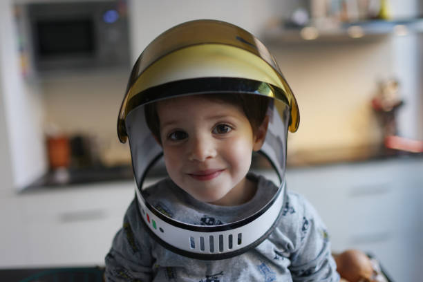

KYP
HOME
KYP A Global Platform For The Youth
KYP is an International platform inspiring all the youth across the World.
The youth are the most powerful in the Universe. The future holds something for the youth and they should not be worried about it.
Our stages of growth are determined by our characters and we must not take this for granted. Keep in mind that the more you grow the harder things become. Avoid the bad peer groups and follow the right track. Just as you did when you were still 7.

Our parents always are there to guide us where we go wrong so we should respect them no matter how hash they may sometimes be to you. Don't make your parents stressed about you at all times.
Always believe in your personal dreams and avoid wet blankets about your dreams. Keep this in mind that the more that one friend discourages you is the more they get involoved in your personal life. Always look for those friends who are adding to your life goals.
Let's make a Change
Let's make a Future
Look through what can be done to make your future bright and woderful. Keep your eyes up and stride forward.

Your life has to be your top priority and secret.
Back To Top